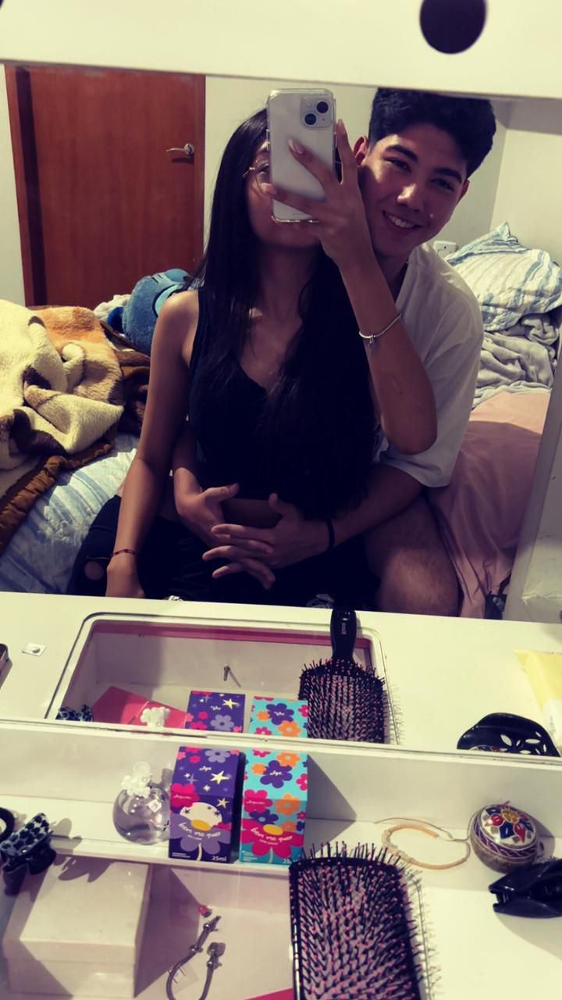

Maria Luiza de Oliveira, você é tudo aquilo que eu procurei por anos. Você é o amor da minha vida, a minha luz, e eu tenho muito orgulho de você. Tenho muita sorte de ter te conhecido. Você faz todos os meus dias ficarem cheios de cor só com o seu ‘bom dia’.
Você é o motivo pelo qual eu tenho forças para levantar da cama e seguir o meu dia, sempre buscando ser melhor por você, por mim, por nós e pelo nosso futuro juntos.
Eu te amo muito, Malu. Você sempre será a minha princesinha.